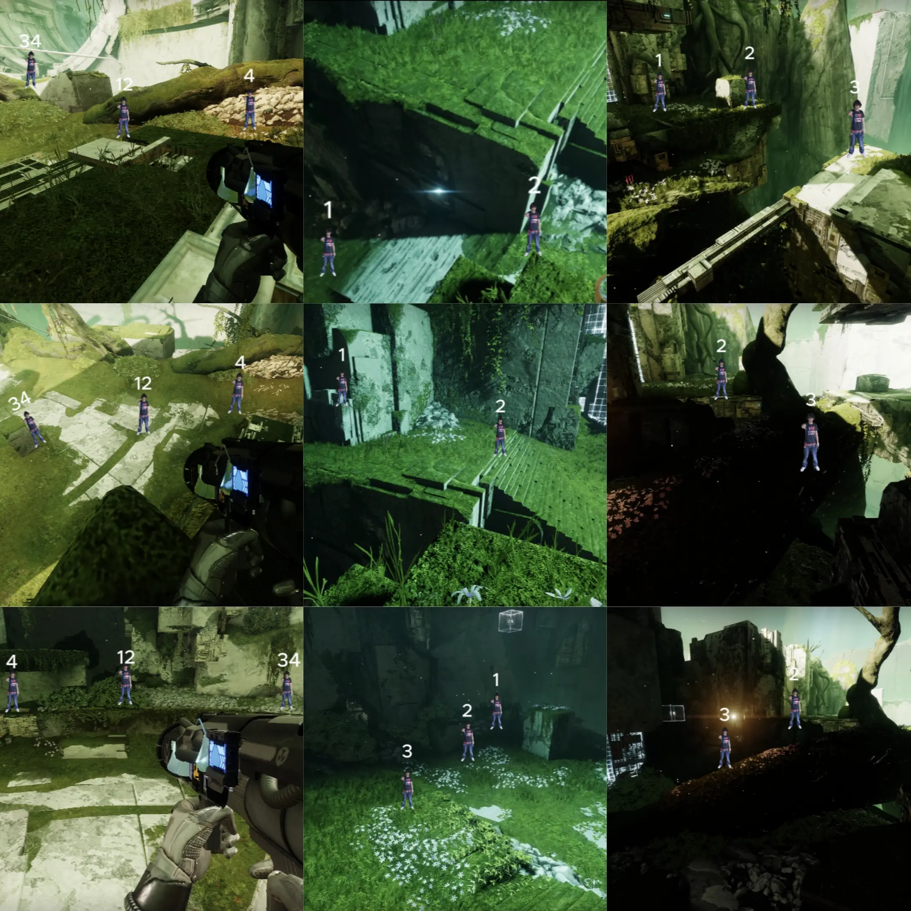
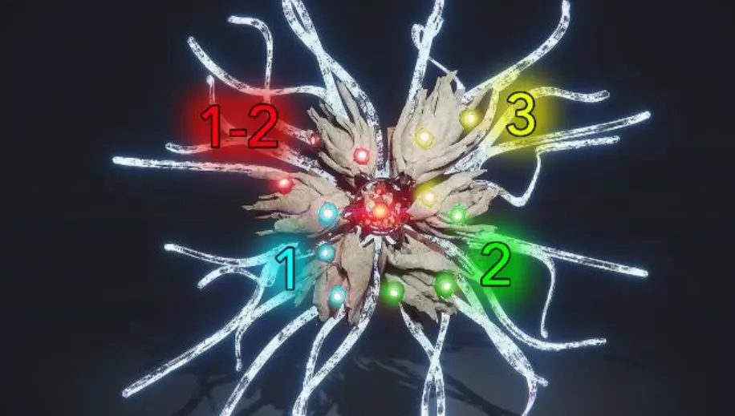

角色配置
请选择一个角色查看配置
关卡策略
老一


按全局中的连线点位站位
不吃电流丰盈o到老二2台
老二
开：
和12猎开2台
留2台清怪至sub
等12猎回2台后连一次线
回1号点守台
守：
每一波在1台sub完等连线
1台出天使：
非last（最后一波天使）：报第一路白盾怪位置去该路清天使和白盾
last：3路天使和2路白盾全清
内：
last后1台往内场走的这条路刷白盾利用残余启蒙清掉小怪后钉混乱无序，如果该路没有刷白盾直接钉混乱无序。
钉完混乱无序去内场连线。
连线后负责后路天使、↘白盾（已钉混乱无序）
老二结束后按下示位置站位：
线头 线中 线中 线尾
1猎 2猎 3猎 4猎（卡旗）
老三

使用救赎之握tp boss
tp封冰后换急切跳至继电器附近集合准备输出
换推推打↙假眼（来不及让4猎帮打）
尾王
负责左边炮台和弱点、清怪防左献祭
直接输出不连线
老一
按全局中的连线点位站位
吃2房电流丰盈o到老二2台
老二
开：
和12猎开2台
超级跳至3台和34术开3台
回2台和1猎连一次线后回1台摸旗
守：
听队友报台子出天使和第一路白盾后和34术去帮忙分别清另外两路的天使和白盾
在3个台子都出完天使进入last时和34术 eraly skip至内场连线（跳过第一次sub）
内：
和34术一起杀掉sub完刷新的3只天使(看右和上)后去↖钉混乱无序
最后的sub负责左路天使、↖白盾（混乱无序）
老二结束后不参与连线：
老三
存荧光
继电器附近集合输出
打↖假眼
尾王
左边荧光
直接输出不连线
老一
按全局中的连线点位站位
大平台3口电流丰盈全吃
过加载点自杀
老二
开：
复活后直接去4台
等4猎来4台连线开台
开完4台后走传送门回1台和3猎连一次线
摸旗去2台守台
守：
每一波在2台sub完去1台找1猎连线
2台出天使：
非last（最后一波天使）：报第一路白盾怪位置去该路清天使和白盾
last：3路天使和2路白盾全清
内：
last后2台往内场走的这条路刷白盾利用残余启蒙清掉小怪，如果该路没有刷白盾用机炮注意一下左路和后路天使。
sub后去内场连线。
连线后负责↙白盾
老二结束后按下示位置站位：
线头 线中 线中 线尾
1猎 2猎 3猎 4猎（卡旗）
老三
杀米诺陶/控小怪
继电器附近集合输出
打↘假眼
尾王
清怪防献祭
输出连线按下示位置站位：
线头 线中 线尾
4猎 2猎 34术
老一
按全局中的连线点位站位
吃3房电流丰盈后去大平台打3口附近的炮台（boss没吐直接去大平台）
大平台2口处复活2猎
过加载点自杀
老二
开：
复活后在1台线头和4猎开1台
控怪等3/4台都报开台后杀掉控住的小怪使其sub
在线头等2猎回1台后连一次线
摸旗去3台守台
守：
每一波在3台sub完等连线
3台出天使：
非last（最后一波天使）：报第一路白盾怪位置去该路清天使和白盾
last：3路天使和2路白盾全清
内：
last后3台往内场走的这条路刷白盾利用残余启蒙清掉小怪，如果该路没有刷白盾用机炮注意一下左路和前路天使。
sub后去内场连线。
连线后负责右路天使
老二结束后按下示位置站位：
线头 线中 线中 线尾
1猎 2猎 3猎 4猎（卡旗）
老三
杀米诺陶/控小怪
继电器附近集合输出
打↗假眼
尾王
清怪防献祭
early jump
老一
按全局中的连线点位站位
不吃电流丰盈o到老二1台准备卡旗
老二
开：
卡旗后用劲弩扣掉天使在1台线尾和3猎开1台
超级跳至4台和2猎开4台
回1台摸旗去4台守台（根据sub后剩余启蒙时间判断是否需要在1台和2/3猎再连线续一下时间）
守：
每一波在4台sub完去3台找3猎连线
4台出天使：
非last（最后一波天使）：报第一路白盾怪位置去该路清天使和白盾
last：3路天使和2路白盾全清
内：
last后4台往内场走的这条路刷白盾利用残余启蒙清掉小怪后钉混乱无序，如果该路没有刷白盾直接钉混乱无序。
钉完混乱无序去内场连线。
连线后负责前路天使、↗白盾（已钉混乱无序）
老二结束后按下示位置站位：
线头 线中 线中 线尾
1猎 2猎 3猎 4猎（卡旗）
老三
辅助1猎tp boss帮忙碎冰
继电器附近集合输出
尾王
负责右边炮台和弱点、清怪防右献祭
带好开锁器后输出连线时开线并按下示站位：
线头 线中 线尾
4猎 2猎 34术
老一
按全局中的连线点位站位
吃1房boss电流丰盈后转大招oob至老二2台
老二
开：
和12猎开3台
暂留3台清怪
守：
听队友报台子出天使和第一路白盾后和12猎去帮忙分别清另外两路的天使和白盾
在3个台子都出完天使进入last时和12猎 eraly skip至内场连线（跳过第一次sub）
内：
和34术一起杀掉sub完刷新的3只天使（看左和下）
oob至尾王等队友喊p
老三
查无此人
尾王
右边荧光
火中插线中附近后换推推和火箭手枪
输出连线按下示位置站位：
线头 线中 线尾
4猎 2猎 34术
连线前推一下连线后推一下然后打手枪